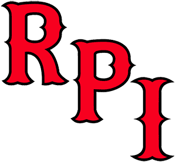

ECAC
St. Lawrence
St. Lawrence is 4-8-0 and 25th in the NPI. Across 500 simulated seasons its median NPI finish is 25th, with a 95% range of 17th to 33rd. ELO expects about 5 wins in the next 10.
Next 10 games
- Fri, Nov 6at Union46%
- Sat, Nov 7

at RPI79% - Fri, Nov 13vs Brown50%
- Sat, Nov 14vs Yale29%
- Fri, Nov 20vs Quinnipiac27%
- Sat, Nov 21vs Princeton30%
- Fri, Nov 27at Merrimack70%
- Sat, Nov 28at Merrimack70%
- Fri, Dec 4vs Colgate32%
- Sat, Dec 5vs Cornell36%
Win chances from ELO; the dot is stronger the more lopsided the game.
Projected NPI finish
500 simulated seasons, remaining games decided by ELO win chances. Dashed line: median. Shaded: 95% range.